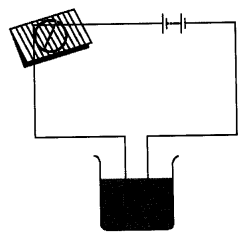

NCERT Solutions for Class 8 Science Chapter 14 Chemical Effects of Electric Current
Topics and Sub Topics in Class 8 Science Chapter 14 Chemical Effects of Electric Current:
| Section Name | Topic Name |
| 14 | Chemical Effects of Electric Current |
| 14.1 | Do Liquids Conduct Electricity? |
| 14.2 | Chemical Effects of Electric Current |
| 14.3 | Electroplating |
Chemical Effects of Electric Current Class 8 Science NCERT Textbook Questions
Question 1.
Fill in the blanks.
(a) Most liquids that conduct electricity are solutions of ______ , ______ and ______
(b) The passage of an electric current through a solution causes _______ effects.
(c) If you pass current through copper sulphate solution, copper gets deposited on the plate connected to the ________ terminal of the battery.
(d) The process of depositing a layer of any desired metal on another material by means of electricity is called _______
Answer:
(a) acids, bases, salts
(b) chemical
(c) negative
(d) electroplating
Question 2.
When the free ends of a tester are dipped into a solution, the magnetic needle shows deflection. Can you explain the reason?
Answer:
The deflection in magnetic needle shows that the circuit is complete and the solution conducts electricity, i.e., it is a good conductor.
Question 3.
Name three liquids, which when tested in the manner shown in Fig. 14.5. may cause the magnetic needle to deflect.
Answer:
Vinegar, lemon juice and tap water.
Question 4.
The bulb does not glow in the setup shown in Fig. 14.6. List the possible reasons. Explain your answer.
Answer:
The bulb may not glow because of the following reasons:
(i) The wires in the circuit may be loosely connected.
(ii) The bulb may be fused.
(iii) The cells may be used up.
(iv) The liquid may be an insulator, i.e., a poor conductor of electricity.
Question 5.
A tester is used to check the conduction of electricity through two liquids, labelled A and B. It is found that the bulb of the tester glows brightly for liquid A while it glows very dimly for liquid B. You would conclude that
(i) liquid A is a better conductor than liquid B.
(ii) liquid B is a better conductor than liquid A.
(iii) both liquids are equally conducting.
(iv) conducting properties of liquid cannot be compared in this manner.
Answer:
(i) liquid A is a better conductor than liquid B.
Question 6.
Does pure water conduct electricity? If not, what can we do to make it conducting?
Answer:
No, pure water doesn’t conduct electricity. But when salt is dissolved in pure water, it conducts electricity.
Question 7.
In case of a fire, before the firemen use the water hoses, they shut off the main electrical supply for the area. Explain why they do this.
Answer:
The water used in the water hoses is not pure water and is a good conductor of electricity. So, the fire¬men shut off the electric supply before spraying water to save themselves and other people from electrocution.
Question 8.
A child staying in a coastal region test the drinking water and also the seawater with his tester. He finds that the compass needle deflects more in the case of seawater. Can you ex¬plain the reason?
Answer:
The seawater contains a huge amount of salts in comparison to drinking water, hence the seawater is a better conductor of electricity and it produces a stronger magnetic field in the wire and hence deflects the compass needle more.
Question 9.
Is it safe for the electrician to carry out electrical repairs outdoors during heavy downpour? Explain.
Answer:
No, it is highly dangerous to carry out the electrical repairs outdoors during the heavy downpour. It can cause electrocution, as water is a good conductor of electricity.
Question 10.
Paheli had heard that rainwater is as good as distilled water. So she collected some rainwater in a clean glass tumbler and tested it using a tester. To her surprise, she found that the compass needle showed deflection. What could be the reasons?
Answer:
Rainwater is pure water which is an insulator but it gets mixed with air pollutants like sulphur dioxide and nitrogen oxides and form acidic solution, which is a good conductor of electricity. So, the compass needle showed deflection.
Question 11.
Prepare a list of objects around you that are electroplated.
Answer:
Objects that are electroplated are door handles, taps, rims of cycles, showers, the handlebar of cycles and bikes, gas burner, tin cans, metallic almirahs, buckles of belts, etc.
Question 12.
The process that you saw in Activity 14.7 is used for purification of copper. A thin plate of pure copper and a thick rod of impure copper are used as electrodes. Copper from impure rod is sought to be transferred to the thin copper plate. Which electrode should be attached to the positive terminal of the battery and why?
Answer:
The thick rod of impure copper plate is to be attached to the positive terminal of the battery because when electric current is passed through the copper sulphate solution, it gets dissociated into copper and sulphate. The free copper, being positively charged, gets drawn to the negative terminal of the battery and gets deposited on it. On the other hand the loss of copper from the solution is regained from the impure copper rod which is attached to the positive terminal of the battery.
Chemical Effects of Electric Current Class 8 Science NCERT Intext Activities Solved
Activity 1 (NCERT Textbook, Page 173)
Join the free ends of the tester together fora moment. This completes the circuit of the tester and the bulb should glow. However, if the bulb does not glow, it means that the tester is not working. Can you think of the possible reasons? Is it possible that the connections are loose? Or, the bulb is fused? Or, your cells are used up? Check that all the connections are tight. If they are, then replace the bulb with another bulb. Now test if the tester is working or not. If it is still not working then replace the cells with fresh cells.
Solution:
In this activity, if the bulb does not glow, it means that either the connections of the circuit are loose or the bulb is fused or cells are used up. If the tester is working, it can be used to test the materials, i.e., whether it is a conductor or non-conductor of electricity.
Activity 2 (NCERT Textbook, Page 773)
Collect a few small plastic or rubber caps of discarded bottles and clean them. Pour one teaspoon of lemon juice or vinegar in one cap. Bring your tester over this cap and let the ends of the tester dip into lemon juice or vinegar as shown in Fig. 14.1. Take care that the ends are not more than 1 cm apart but at the same time do not touch each other. Does the bulb of the tester glow? Does lemon juice or vinegar conduct electricity? How would you classify lemon juice or vinegar—a good conductor or a poor conductor?
Solution:
In this activity the bulb glows which shows that lemon juice and vinegar both conducts electricity, hence they are good conductors of electricity.
Activity 3 (NCERT Textbook, Page 174)
Take the tray from inside a discarded matchbox. Wrap an electric wire a few times around the tray. Place a small compass needle inside it. Now connect one free end of the wire to the terminal of a battery.
Leave the other end free. Take another piece of wire and connect it to the other terminal of the battery (Fig. 14.2).
Join the free ends of two wires momentarily. The compass needle should show deflection. Your tester with two free ends of the wire is ready.
Now repeat Activity 14.2 using this tester. Do you find a deflection in the compass
needle the moment you dip the free ends of the tester in lemon juice?
Take out the ends of the tester from the lemon juice, dip them in water and then wipe them dry. Repeat the activity with other liquids such as tap water, vegetable oil, milk, honey. (Remember to wash and wipe the ends of tester after testing each liquid). In each case observe whether the magnetic needle shows deflection or not. Record your observations in Table 14.1.
Solution:
Good/Poor Conducting Liquids
| S.No. | Material | Compass Needle Shows Deflection Yes/No | Good Conductor/ Poor Conductor |
| 1. | Lemon juice | Yes | Good conductor |
| 2. | Vinegar | Yes | Good conductor |
| 3. | Tap water | Yes | Good conductor |
| 4. | Vegetable oil | No | Poor conductor |
| 5. | Milk | Yes | Good conductor |
| 6. | Honey | No | Poor conductor |
| 7. | Soda | Yes | Good conductor |
| 8. | Distilled water | No | Poor conductor |
| 9. | Kerosene oil | No | Poor conductor |
| 10. | Curd and water | Yes | Good conductor |
Thus, lemon juice, vinegar, tap water, milk, curd and water, and soda are good conductors of electricity while vegetable oil, honey, kerosene oil, and distilled water are poor conductors of electricity or insulators.
Activity 4 (NCERT Textbook, Page 175)
Take about two teaspoonfuls of distilled water in a clean and dry plastic or rubber cap of a bottle. (You may obtain distilled water from your school science lab. You may also get distilled water from a medical store or a doctor or a nurse). Use the tester to test whether distilled water conducts electricity or not. What do you find? Does distilled water conduct electricity? Now dissolve a pinch of common salt in distilled water. Again test. What do you conclude this time?
Solution:
If the tester is put in distilled water, the bulb of the tester does not glow. This shows that distilled water does not conduct electricity. But when salt is dissolved in distilled water and again tested, the bulb glows which shows that water containing salts conduct electricity. Thus water which is free of salts are poor conductors while water with salts is a good conductor of electricity.
Activity 5 (NCERT Textbook, Page 176)
Jake three clean plastic or rubber caps of bottles. Pour about two teaspoonfuls of distilled water in each of them. Add a few drops of lemon juice or dilute hydrochloric acid to distilled water in one cap. Now in the second cap containing distilled water, add a few drops of a base such as caustic soda or potassium iodide. Add a little sugar to the distilled water in the third cap and dissolve it. Test which solutions conduct electricity and which do not. What results do you obtain?
Solution:
First and second cap with acid and base respectively, conducts electricity whereas third cap having sugar dissolved in distilled water do not conduct electricity.
Activity 6 (NCERT Textbook, Page 176)
Take out carbon rods carefully from two discarded cells. Clean their metal caps with sand paper. Wrap copper wires around the metal caps of the carbon rods and join them to a battery (Fig. 14.3). We call these two rods electrodes. (Instead of carbon rods, you may take two iron nails about 6 cm long.) Pour a cupful of water in a glass/ plastic bowl. Add a teaspoonful of salt or a few drops of lemon juice to water to make it more conducting. Now immerse the electrodes in this solution. Make sure that the metal caps of the carbon rods are outside the water. Wait for 3-4 minutes. Observe the electrodes carefully. Do you notice any gas bubbles near the electrodes? Can we call the change taking place in the solution a chemical change? Recall the definition of a chemical change that you learnt in Class VII.
Solution:
On passing electric current through the conducting solution of lemon juice and water, chemical reaction takes place. Water is dissociated into its constituent gases, i.e., hydrogen and oxygen. Oxygen bubbles are formed on the electrode connected to the positive terminal of the battery and hydrogen bubbles are formed on the other electrode. Changes of colour of solutions may occur depending on what solution and electrodes are used. This process is known as chemical effects of current.
Activity 7 (NCERT Textbook, Page 177)
We will need copper sulphate and two copper plates of size around 10 cm x 4 cm. Take 250 ml. of distilled water in a clean and dry beaker. Dissolve two teaspoonfuls of copper sulphate in it. Add a few drops of dilute sulphuric acid to copper sulphate solution to make it more conducting. Clean copper plates with sand paper. Now rinse them with water and dry them. Connect the copper plates to the terminals of a battery and immerse them in copper sulphate solution (Fig. 14.4).
Allow the current to pass for about 15 minutes. Now remove the electrodes from the solution and look at them carefully. Do you find any difference in any one of them? Do you find a coating over it? What colour is the coating? Note down the terminal of the battery with which this electrode is connected.
Solution:
After removing the electrodes from the solution, we find that copper metal gets deposited on the plate at the negative of the battery. It is concluded that when electric current is passed through the copper sulphate solution, copper sulphate dissociates into copper and sulphate. The free copper gets deposited on the plate acting as cathode. Gradually, a layer of copper builds up on the plate. This process is known as electroplating.
NCERT Solutions for Class 8 Science Chapter 14 – 1 Mark Questions and Answers
Question 1.
What are conductors ?
Answer:
Materials which allow electric current to flow through them are called conductors.
Question 2.
What are insulators ?
Answer:
Materials which do not allow electric current to flow through them are called insulators.
Question 3.
Classify the following liquids into conductors and insulators : lemon juice, , distilled water, tap water, milk.
Answer:
Conductors : lemon juice, tap water.
Insulators : distilled water, milk.
Question 4.
What are electrodes ?
Answer:
Electrodes are the terminals through which current is passed into a liquid.
Question 5.
Which is the most common application of chemical effect of current ?
Answer:
Electroplating.
Question 6.
Apart from chemical effect, which other effect electric current produce ?
Answer:
Electric current can produce magnetic effect also.
Question 7.
Is air an insulator or conductor of electricity ?
Answer:
Air is an insulator of electricity.
Question 8.
Name one non-metal which a good conductor of electricity.
Answer:
Graphite.
Question 9.
What is LED?
Answer:
LED is Light Emitting Diode.
Question 10.
What is electrolysis ?
Answer:
Electrolysis is the breaking up of a compound from its solution on passing electric current through the electrolyte.
Question 11.
Name the gases formed when electric current is passed in water containing a few drops of acid ?
Answer:
Hydrogen and Oxygen.
Question 12.
In what proportion the two products from electrolysis of water are obtained ?
Answer:
By volume of hydrogen gas is twice the volume of oxygen gas.
Question 13.
What is CFL ?
Answer:
Compact Fluorescent Lamps.
Question 14.
Jaya sets up a circuit as given below. But the bulb does not glow. Why?
Answer:
The bulb does not glow because distilled water is an insulator, since it does not have dissolved salts.
NCERT Solutions for Class 8 Science Chapter 14 – 2 Mark Questions and Answers
Question 1.
When the free ends of a tester are dipped into a solution, the magnetic needle shows deflection. Can you explain the reason ? [NCT 2011]
Answer:
Yes, the solution does conduct electricity. Compass needle shows deflection due to magnetic effect of electric current.
Question 2.
Name three liquids, which when tested in the manner shown in figure, may cause the magnetic needle to deflect. [NCT 2011]

Answer:
The compass needle will show deflection with tap water, lemon juice and sodium chloride solution.
Question 3.
A tester is used to check the conduction of electricity through two liquids, labelled A and B. It is found that the bulb of the tester glows brightly for liquid A while it glows very dimly for liquid B. You would conclude that
- Liquid A is a better conductor than liquid B.
- Liquid B is a better conductor than liquid A.
- Both liquids are equally conducting.
- Conducting properties of liquid cannot be compared in this manner. [NCERT]
Answer:
Liquid A is a better conductor of electricity because the bulb glows more in it.
Question 4.
Does pure water conduct electricity ? If not, what can we do to make it conducting ? [NCERT]
Answer:
As pure water is free of salts and thus it is an insulator so to make pure water conducting, we can add some salts or acid to it.
Question 5.
Deposits can be seen in containers uses for storing water. Explain why these deposits occur.
Answer:
In containers, water evaporates slowly. The salts separate out and deposit on the sides of the container.
Question 6.
In case of a fire, before the firemen uses the water hoses, they shut off the main electrical supply for the area. Explain why they do this. [NCERT]
Answer:
Firemen shuts off the main electrical supply for the area because water is a good conductor of electricity and the firemen can get electrocuted.
Question 7.
Is it safe for the electrician to carry out electrical repairs outdoors during heavy downpour? Explain. [NCERT]
Answer:
No, it is not advisable for electrician to carry out electrical repairs during heavy downpour because water is a good conductor of electricity and the person can get shock.
Question 8.
A child staying in a coastal region tests the drinking water and also the seawater with his tester. He finds that the compass needle deflects more in the case of seawater. Can you explain the reason ? [NCERT]
Answer:
The sea water contains more salts dissolved in it as compared to the tap water. So, the deflection of the compass needle is more.
Question 9.
Fill in the blanks.. [NCERT]
- Most liquids that conduct electricity are solutions of …………, ………. and …………..
- The passage of an electric current through a solution causes ……………….. effects.
- If you pass current through copper sulphate solution, copper gets deposited on the plate connected to the ……….. terminal of the battery.
- The process of depositing a layer of any desired metal on another material by means of electricity is called …………
Answer:
- acids, bases and salts.
- change
- negative
- electroplating
Question 10.
Paheli had heard that rainwater is as good as distilled water. So she collected some rainwater in a clean glass tumbler aifd tested it using a tester. To her surprise she found that the compass needle showed deflection. What could be the reasons ? [NCERT]
Answer:
The rainwater showed deflection with the tester because it is not as pure as distilled water. Distilled water does not have any salts dissolved in it, but rain water may have some impurities in it.
Question 11.
Why should you not touch electrical appliances with wet hands ?
Answer:
Water is a solution of salts and so it is a good conductor of electricity. Therefore, we can be electrocuted in case we touch appliances with wet hands.
Question 12.
Why is chromium used for electroplating ? .
Answer:
Chromium is used for electroplating because it has a shiny appearance, does not corrode and is scratch resistant.
Question 13.
Why the iron cans are electroplated with tin ?
Answer:
Tin is less reactive than iron. Thus food, stored in iron cans, is prevented from being spoilt due to iron by electroplating it by tin.
Question 14.
Why should you not do the experiments on electricity by using electric supply from mains ?
Answer:
We should not do the experiments on electricity by using electric supply from the mains because there is large amount of current and the person using it can get electrocuted.
Question 15.
If the ends of the wire of tester are touched for a long time, what will happen ?
Answer:
If the ends of the wire of tester are touched for a long time, the cells will be finished very soon.
Question 16.
What is the disadvantage of electroplating done in the factories ?
Answer:
The disposal of the used conducting solution after electroplating is hazardous and can cause environmental pollution. There are specific disposal guidelines for environmental protection.
Question 17.
How are bridges and automobiles prevented from rusting ?
Answer:
Bridges and automobiles are prevented from rusting by plating them with zinc.
Question 18.
Why are LEDs more useful for testing the flow of electric current ?
Answer:
LEDs require very little energy and glow even if a small current is passing through the circuit.
Question 19.
Give the construction of LED.
Answer:
LED is a device in which the two terminals inside the glass bulb are connected together with a metallic point of Galluim Arsenide.
Question 20.
After the electroplating of a spoon with silver, it was found that the anode has become thin. Why ?
Answer:
During electroplating, the silver metal from the anode is deposited on the cathode. Therefore, it becomes thin.
Question 21.
What is electroplating? Write its one use.
Answer:
Electroplating is the process of depositing a thin film of one metal over another metal by passing electric current through an electrolyte. Use plating artificial jewellery with gold.
NCERT Solutions for Class 8 Science Chapter 14 – 3 Mark Questions and Answers
Question 1.
The bulb does not glow in the set-up shown in figure. List the possible reasons. Explain your answer. [NCERT]
Answer:
It cannot be said for sure that liquid does not conduct electricity because :
- may be the cells are weak.
- may be the current is so weak that it does not heat the filament of the bulb allowing it to glow.
Question 2.
How can you make a tester for testing whether a given material is a conductor or an insulator ?
Answer:
A tester can be made by attaching one free end of the wire to a terminal of a battery and another wire from other terminal of the battery to a bulb. The two free ends of wire are connected to the material to be tested.
Question 3.
The bulb in the tester does not glow when current is passed through it. What can be the possible reasons for this ?
Answer:
The possible reasons for this are :
- the connections may be loose.
- the bulb may be defective.
- the cells may be defective.
Question 4.
The liquid is a conductor and the circuit is also complete, but the bulb does not glow. Why ?
Answer:
The bulb does not glow even though the circuit is complete because the current is too small. The filament of the bulb is heated due to current and then it glows.
Question 5.
If the current in the circuit is small, how can we test its presence ?
Answer:
We can test the presence of the small current by using a LED instead of the bulb.
Question 6.
How can the magnetic effect be used as a tester ?
Answer:
Dip the ends of the wire in the given liquid. If the magnetic compass shows deflection glows, it is a conductor, but if it does not deflect, it is an insulator.
Question 7.
Explain the process of electroplating of copper.
Answer:
When electric current is passed through copper sulphate solution, the copper sulphate breaks up into copper and sulphate ions. The free copper gets drawn to the plate connected to the negative terminal of the battery and gets deposited on that plate. From the other plate, an equal amount of copper gets dissolved in the solution. The loss of copper from solution is cqmpensated and the process goes on.
Question 8.
During electrolysis of water, why does hydrogen collect on cathode and oxygen collect on anode ?
Answer:
When electric current is passed in water hydrogen ions (H+) move towards cathode and get collected over it. Hydroxyl ions (OH )move towards the anode and oxygen is collected on it.
Question 9.
Give three applications of chemical effect of current.
Answer:
- Electroplating.
- Refining of impure metals.
- Refining of metal are for obtaining pure metal.
Question 10.
What is the objective of electroplating ?
Answer:
- Decoration of articles by giving them a layer for e.g., silver plating on cutlery.
- Protection of the surface of bases metals which corrode for e.g., iron is plated with chromium.
- Artificial jewellery is plated with silver or gold.
Question 11.
What precautions should be observed when doing electroplating ?
Answer:
- The articles to be plated should be cleaned throughly to remove dust, grease or any deposit on it.
- Only direct current should be used.
- The temperature around the electroplating equipment should be optimum.
Question 12.
Iron is a strong metal used for making bridges. Can we do electroplating on it to protect is from corrosion ? Why ?
Answer:
We prefer not to do electroplating on iron used for bridges because it is very costly. Instead the iron can be galvanised or painted.
Question 13.
Which properties of chromium make it useful for electroplating on iron ? Why we cannot make the whole article with chromium ?
Answer:
Chromium has a good shine, it resists scratches and is corrosion resistant. We cannot make the whole article from it because it is a very costly metal.
NCERT Solutions for Class 8 Science Chapter 14 – 5 Mark Questions and Answers
Question 1.
What is the basic principle of electric pen ? Explain how it can be used for writing.
Answer:
Electric charge on ions is used for writing with an electric pen.
Method :
- Take a filter paper soaked in potassium iodide solution to which a pinch of starch is added.
- Place the filter paper on a metal sheet.
- Connect the negative terminal of battery to the metal sheet.
- Write on the paper with the end of the wire connected to the positive terminal.
- The writing appears on the paper. This happens because the when current is passed, the K+ ions are attracted to the metal sheet. The iodide ions (I- ) react with starch to turn blue black.
Question 2.
Dinesh is wants to study the chemical effect of current at home. How can he do it ?
Answer:
Dinesh can study the chemical effect of current at home very easily. Take two pieces of copper wire and iron wire. Place them in fresh lemon fruit. Attach the free ends of the wires to a LED. LED glows showing the flow of current.
Question 3.
Give some uses of LED. How should LED be connected ?
Answer:
- as indicators in electrical appliances.
- as a point source of light in laser beam torches.
- LEDs emitting white light can be used instead of bulbs.
The longer lead (leg) from the LED should be connected to the positive terminal of the battery and the shorter lead to the negative terminal of the battery.
Question 4.
What is the difference between current flowing through metals and current flowing through liquids ?
Answer:
In metals electric current is conducted by flow of electrons. In liquids, the movement of charged particles (ions) carry current from anode to cathode terminals. Electrolytes conduct current at a slow rate than metals.
NCERT Solutions for Class 8 Science Chapter 14 MCQs
Question 1.
The decomposition of an electrolyte when electricity is passed through it, is called
(a) conduction
(b) coating
(c) electrolysis
(d) electro refining
Answer:
(c)
Question 2.
Which out of the following does not conduct electricity ?
(a) Copper
(b) Alcohol
(c) Dilute sulphuric acid
(d) Vinegar
Answer:
(b)
Question 3.
The electrode, connected to the positive terminal of a battery, is called
(a) anode
(b) pole
(c) cathode
(d) photodiode
Answer:
(a)
Question 4.
A metal is released in the electrolysis of a salt. It gets deposited on the
(a) anode
(b) cathode
(c) half on the anode and half on the cathode
(d) sides of the container
Answer:
(b)
Question 5.
Distilled water is a
(a) conductor
(b) insulator
(c) semi-conductor
(d) semi-insulator
Answer:
(b)
Question 6.
A cell is an example of conversion of
(a) magnetic energy into chemical energy
(b) electrical energy into chemical energy
(c) chemical energy into electrical energy
(d) chemical energy into magnetic energy
Answer:
(c)
Question 7.
Which one of the following is a weak electrolyte ?
(a) Sea water
(b) Oxalic acid
(c) Sodium chloride
(d) Nitric acid
Answer:
(b)
Question 8.
Which of the following metal is not extracted by electrolysis?
(a) Aluminium
(b) Iron
(c) Sodium
(d) Potassium
Answer:
(b)
More CBSE Class 8 Study Material
- NCERT Solutions for Class 8 Maths
- NCERT Solutions for Class 8 Science
- NCERT Solutions for Class 8 Social Science
- NCERT Solutions for Class 8 English
- NCERT Solutions for Class 8 English Honeydew
- NCERT Solutions for Class 8 English It So Happened
- NCERT Solutions for Class 8 Hindi
- NCERT Solutions for Class 8 Sanskrit
- NCERT Solutions